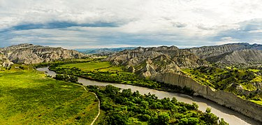

get to know georgia
ვაშლოვანის სახელმწიფო ნაკრძალი — კომპლექსური ნაკრძალი დედოფლისწყაროს მუნიციპალიტეტში, შირაქის ზეგანზე, საქართველოს უკიდურეს აღმოსავლეთ ნაწილში, თბილისიდან 200 კმ-ში. ნაკრძალად გამოცხადდა 1935 წელს. საერთო ფართობია 9962 ჰა,[1] ტყით დაფარულია 4,032 ჰა, დანარჩენი ნაწილი ველებს, უდაბნოს, ხევებს და ალესილებს უჭირავს.
ნაკრძალის ნათელი ტყის ძირითადი კომპონენტია საკმლის ხე და ღვია. აქვე გვხვდება აკაკი, ბერყენა, ბროწეული, ბალღოჯი, გრაკლა, შავჯაგა, ძეძვი, ჭალაფშატა და სხვა, ბალახოვანი საფრიდან — უროიანი, ავშნიანი და მლაშობურიანი დაჯგუფებები. გარდა ქვეწარმავლებისა (გიურზა, სხვადასხვა სახეობის ხვლიკები), რომლებიც აქ ძალიან ბევრია. გვხვდება მრავალი სახის ფრინველი (კაკაბი, კოდალა, ორბი, სვავი, მიმინო, უფეხურა, მოლაღური, კვირიონი, ჩხართვი და სხვა) და ძუძუმწოვარი (გარეული ღორი, კურდღელი, ტყისა და ველის მელა, კავკასიური მგელი, დათვი, ზოლებიანი აფთარი, მაჩვი და მრავალი სხვა). ნაკრძალის მიზანია ამჟამად ძალზე შემცირებული ნათელი ტყის ფლორისა და ფაუნის იშვიათი წარმომადგენლების დაცვა-შემონახვა.
ვაშლოვანის ეროვნული პარკის შექმნა განაპირობა ვაშლოვანის ნაკრძალის გარშემო არსებული ნაკლებად სახეშეცვლილი ეკოსისტემების განადგურების საშიშროებამ. აღნიშნული პროცესი საფრთხის ქვეშ აყენებდა როგორც ამ ეკოსისტემებს, ასევე ხელს უშლიდა ვაშლოვანის ნაკრძალის ბიომრავალფეროვნების შენარჩუნებასაც. ვაშლოვანის ნაკრძალისა და ეროვნული პარკის შექმნა ემსახურება არიდული ეკოსისტემის ბუნებრივ მდგომარეობაში შენარჩუნებასა და ტერიტორიაზე გავრცელებულ მცენარეთა და ცხოველთა იშვიათი სახეობების დაცვასა და აღდგენას. გარდა ამისა, დაცული ტერიტორიების არსებობა ხელს უწყობს გარემოს მონიტორინგს, მეცნიერულ კვლევებსა და ეკოლოგიურ განათლებას.
ვაშლოვანის სახელმწიფო ნაკრძალი მოიცავს პანტიშარისა და ვაშლოვანის მასივებს (300-600 მ ზღვის დონიდან). ნაკრძალს აღმოსავლეთიდან ესაზღვრება ყუმურის ვაკე, დასავლეთიდან – მამაჩაისა და ეშმაკის ხეობების წყალგამყოფი, ჩრდილოეთიდან – მასივების ჩრდილოეთი თხემი, სამხრეთიდან კი – დიდი ჩრდილის ქედისა და პანტიშარის მთების სამხრეთ ფერდობთა ალესილების ძირები.[1] აღსანიშნავია ვაშლოვანის დაცული ტერიტორიების რელიეფის მეტად საინტერესო და თავისებური ფორმები. ვაშლოვანი საინტერესოა კლიმატური თვალსაზრისითაც. ის ერთ-ერთი ყველაზე მშრალი და უწყლო უბანია მთელ საქართველოში. აქაური კლიმატი ხასიათდება სიმშრალითა და სითბოს სიუხვით
ვაშლოვანში არსებული ბუნებრივი პირობების სპეციფიკური ხასიათი განაპირობებს ორიგინალური ფლორის არსებობას. ხმელეთის ასეთ მცირე ფართობზე მცენარეული ტიპების ესოდენ სწრაფი ცვლა საქართველოს არცერთ სხვა კუთხეში არ შეინიშნება. მრავალფეროვანი ბუნებრივი კომპლექსების მოქმედების შედეგად, ამ მცირე სიმაღლის სხვაობის (ჰიფსომეტრიული ამპლიტუდის) მქონე რეგიონში, ჩამოყალიბდა მკაფიოდ გამოკვეთილი ხუთი მცენარეული ტიპი: ნახევარუდაბნო, არიდული (ლათ. aridus — მშრალი) მეჩხერი ტყე, სტეპი და ფოთლოვანი ტყე. გარდა ამისა გამოიკვეთა ოთხი ინტრაზონური ტიპი: კლდეთა ქსეროფიტები, ჭალის, ანუ მდინარისპირა ტყეები, მთისწინების ძეძვიანი და კირქვიანის მცენარეულობა.
ნახევარუდაბნოს მცენარეულობაში გამოიყოფა ავშნიან-უროიანი და ავშნიან-ჩარანიანი ფორმაციები. ბუჩქბალახები: ავშანი (Artemisia fragrans), ჩარანი (Salsola ericoides), უფრო მცირე რაოდენობით ყარღანი (Salsola dendroides), იშვიათად წითელწვერა (Kochia prostrata). ღვიიანი ფორმაციის შემქმნელი სახეობებია ხემაგვარა ღვიები: შავი ღვია (Iuniperus foetidissima) და მრავალნაყოფა ღვია (I. polycarpos). ღვიიან-საკმლისხიანების ფარგლებში მცირე ფრაგმენტებად წარმოდგენილია ბროწეულის (Punica granatum), კოწახურის (Barberis iberica), მაყვლის (Rubus sanguineus), მაწაკის (Imperata cilindrica), ქენდირის (Apocynum sibiricum), ერიანტუსისა (Erianthus purpurascens) და სხვ. დაჯგუფებანი. დათვის ხევში, რიყის გასწვრივ მცირე მონაკვეთზე მესამეული პერიოდის რელიქტის — თურანულას (Populus euphratica) ერთადერთი ადგილსამყოფელია საქართველოში. ღვიიან-საკმლისხიანებში საკმაოდ ბევრია საქართველოსთვის ენდემური სახეობა. ესენია: Torularia eldarica, Galatella eldarica, ასევე იშვიათი სახეობები: Astragalus phseudoutriger, A. sphaerocephalus, Edisarum ibericum, Leptorhabdos virgata, Caccinia Rauwolfii, Tulipa Eichleri და სხვ. ტყის შემქმნელი ძირითადი სახეობებია: ხემცენარეებიდან — საკმლის ხე (Pistacia mutica), ხემაგვარი ღვიები (Iuniperus foetidissima, I. polycarpus, I. rufescens); მათ მშრალი ხევების გასწვრივ ემატება — კავკასიური აკაკი (Celtis caucasica), ქართული ნეკერჩხალი (Acer ibericum), თელა (Ulmus foliacea); ბუჩქებიდან — ძეძვი (Paliurus spina-christi), შავჯაგა (Rhamnus Pallasii), მენახირის ბალი (Cerasus microcarpa, incana), ჟასმინი (Iasminum fruticans), თრიმლი (Cotinus coggygria), ქართული ცხრატყავა (Lonicera iberica); მშრალი ხევების გასწვრივ — ქართული კოწახური (Berberis iberica), ბროწეული (Punica granatum) და სხვა. ბალახოვნებიდან აღსანიშნავია: ყარღანი, შოროქანი და ნაცარქათამასებრთა ოჯახის ერთწლოვანი სარეველა მცენარეები. გამოსარჩევია ჰალოფიტი ბუჩქ-ბალახი Kalidium caspicum, რომელიც ძალიან იშვიათია საქართველოსათვის. ხეობის მარჯვენა მხარეზე, თაბაშირის შემცველ თიხიან ფერდობზე, დეკორატიული ბუჩქის — Eversmania subspinosa-ს ერთადერთი ადგილსამყოფელია საქართველოში. მასთან ერთად მრავლადაა დეკორატიული ეიხლერის ტიტა (Tulipa Eichleri) და ეფემეროიდი ტუბერ-გორგლიანი (Bongardia chrisogonum). ყაშებ-შავი მთის ფარგლებში ტყის ძირითადი შემქმნელი სახეობაა ქართული მუხა (Quercus iberica).
რელიეფის ხასიათის მიხედვით მუხნარი ფორმაცია სხვადასხვა ვარიანტებითა და ასოციაციათა კომპლექსებით წარმოგვიდგება. შედარებით შემაღლებულ უბნებზე ქართული მუხა მცირდება, რცხილას (Carpinus caucasica) უთმობს ადგილს და რცხილნარის ფორმაცია ყალიბდება მერქნიანთა შედარებით მეზოფილური სახეობებით. მდინარე ალაზნის პირა ჭალის ტყის ძირითადი შემქმნელი სახეობებია: ჭალის მუხა (Quercus pedunculiflora), ვერხვები (Populus canescens, P. nigra), იფანი (Fraxinus excelsior); ერთეულებად შემორჩენილია კაკალი (Iuglans regia) და სხვ. მეორე იარუსს ქმნიან: თელა (Ulmus foliace), ტყემალი (Prunus divaricata), კუნელი (Crataegus monogina), ზღმარტლი (Mespilus germanica), შინდანწლა (Svida australis), ტირიფი (Salix alba), კვიდო (Ligustrum vulgaris), თუთა (Morus nigra, M. alba), შვინდი (Cornus mas) და სხვ. მდიდარია ლიანების შემადგენლობაც: სურო (Hedera pastuchovii), კრიკინა (Vitis sylvestris), კატაბარდა (Clematis vitalba), ღიჭი (Smilax excelsa), ღვედკეცი (Periploca graeca), სვია (Humulus lupulus) და სხვ. ბალახოვნებიდან აღსანიშნავია: ისლი, შალამანილი (Salvia glutinosa), ქრისტესბეჭედა (Sanicula europaea), იები (Viola alba, V. odorata), ბერსელა (Brachypodium silvaticum) და სხვ. ბევრია სარეველა სახეობები.
ნაკრძალი სახეობრივი მრავალფეროვნებით ხასიათდება. ამ ფარდობითად მცირე ტერიტორიაზე გავრცელებულია 46 სახეობის ძუძუმწოვარი, 135 სახეობის ფრინველი, 30 სახეობის ქვეწარმავალი და ამფიბია, 16 სახეობის თევზი, უამრავი სახეობის მწერი და უმარტივესი (ამ უკანასკნელთა სრული სახეობრივი შემადგენლობა ჯერ კიდევ დაუდგენელია).
ვაშლოვანის დაცული ტერიტორიების ფაუნა — ყურადღებას იპყრობს როგორც სახეობათა მრავალგვარობით, ასევე მათი მნიშვნელობითაც. ამ ტერიტორიებზე ბინადრობს: დათვი (Ursus arctos), ფოცხვერი (Lynx lynx), მგელი (Canis lupus), გარეული ღორი (Sus scrofa), წავი — (Lutra lutra), სვავი (Aegypius monachus), ორბი (Gyps fulvus), ბექობის არწივი (Aqila heliaca), ფასკუნჯი (Neophron percnopterus), კაკაბი (Alectoris chukar), ბატკანძერი — (Gipaetus barbatus), გველიჭამია არწივი ანუ ძერაბოტი (Circaetus gallicus), ველის არწივი (Aquila nipalensis), შაკი (Pandion haliaetus), შავარდენი (Falco peregrinus), ხოხობი (Phazianus colchicus), გნოლი (Perdix perdix), დურაჯი (Francolinus francolinus), წითელთავა ღაჟო (Lanius senator), ყვითელთავა ნარჩიტა (Regulus ignicapuls), ტუგაის ბულბული (Cercotrichas galactotes) და სხვები. 2003 წლის შემოდგომაზე დაცული ტერიტორიების განვითარების პროექტის ფარგლებში ჩატარებული კვლევების საფუძველზე ნაკრძალში სახეობათა კონსერვაციის შენარჩუნების ცენტრის თანამშრომლებმა აღმოაჩინეს წინააზიური ლეოპარდის ნაკვალევი. შემდგომში მოხერხდა ამ ცხოველის 9 ფოტოს გადაღება ფოტოხაფანგების საშუალებით.
ოთხმოციანი წლების ბოლომდე შეინიშნებოდა გადაშენების პირას მისული ჩლიქოსანი ცხოველი — ქურციკი (Gazela subgutturossa). ცალკეული ინდივიდების სახით დღესაც გვხვდება გადაშენების საფრთხის ქვეშ მყოფი ზოლებიანი აფთარი (Hyaena hyaena), აქვე გვხვდება სტეპისათვის დამახასიათებელი დღეისათვის იშვიათი ფრინველთა სახეობების, სავათისა (Otis tarda) და სარსარაკის (Tetrax tetrax) მცირერიცხოვანი გუნდები. ისინი შეტანილია ბუნების დაცვის მსოფლიო კავშირის (IUCN) წითელ ნუსხაში. ნანახია შავი ყარყატის (Ciconia nigra) ბუდე.
ქვეწარმავალთაგან აღსანიშნავია ხმელთაშუაზღვის კუ — (Testudo graeca), დასავლური მახრჩობელა (Eryx jacululs), აზიური თვალტიტველა ხვლიკი (Ablepharus pannonicus), გრძელფეხება სცინკი (Eumeces shneideri), გიურზა (Vipera lebetina), ოთხზოლიანი მცურავი (Elaphe guatuorliniata) და სხვები.
მდინარეებში გავრცელებულია ლოქო (Silurus glanis), ფარგა (Lucioperca lucioperca), ამიერკავკასიური ბლიკა (Blicca bjoerkna), კობრი (გოჭა) (Cyprinus carpio), შამაია (Chalacalburnus chalcoides), მდინარის ღორჯო (Gobius cephalarges), წვერა (Barbus lacerta), კავკასიური ქაშაპი (Leuciscus cephalus) და სხვა.
ზოგიერთი სახეობა ბუნების დაცვის საერთაშორისო კავშირის (IUCN) წითელ ნუსხაშია შეტანილი.